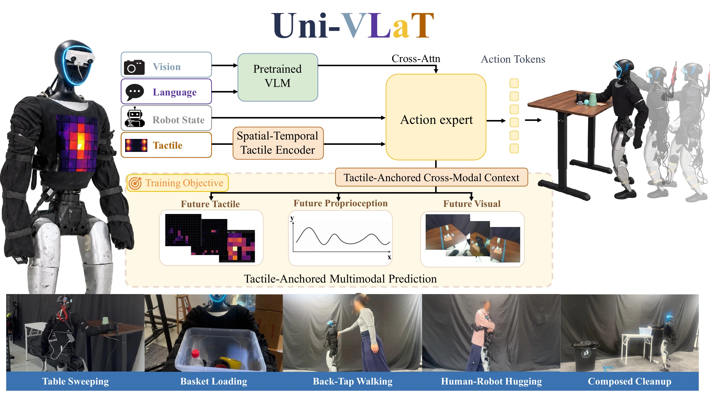
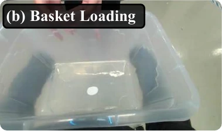
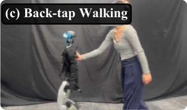
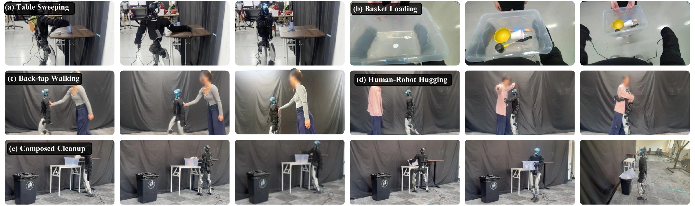
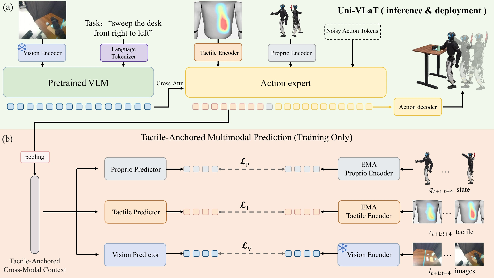

Uni-VLaT

Uni-VLaT adapts pretrained VLA policies with whole-body tactile sensing and training-time prediction of future tactile, proprioceptive, and visual representations.
Abstract.
Real-world Demo.





Whole-body interaction: Table sweeping, basket loading, back-tap walking, human–robot hugging, and composed cleanup. Representative stills from the five real-robot tasks.

Real-robot interaction sequences spanning tactile-triggered locomotion, contact-guided manipulation, changing load, human interaction, and sequential loco-manipulation.
Table Sweeping: Sweep all five objects from the right half of a table to the left, with table height varying across rollouts.
Basket Loading: Maintain stable support as a person places four objects into a basket, adapting to the increasing load and yielding when the person removes it.
Back-Tap Walking: Respond to a tap on the back by walking forward to a designated destination.
Human–Robot Hugging: Complete an encircling motion with gentle contact, with participants of different body sizes.
Composed Cleanup: Sweep rubbish into a box, lift and carry the box, then deposit the box and its contents into a waste bin.
Method.
Tactile as a physical anchor. Tactile sensing directly observes contact at the robot body, proprioception captures the resulting body response, and vision captures changes in the scene. Uni-VLaT connects these complementary observations through future representation prediction while retaining the semantic, visual, and action priors of a pretrained VLA policy.

Spatial and temporal tactile tokens interact with visual, language, proprioceptive, and action features inside the pretrained policy. The contextualized tactile tokens provide a shared context for predicting future physical interaction across modalities.
1. Tactile Adaptation.
Distributed tactile sensors cover eight body regions: the chest, central back, left and right shoulders, left and right upper back, and left and right arms. Sensor readings are denoised and normalized by region. Independent regional encoders and eight learned attention queries produce eight spatial tactile tokens. Axial pooling reduces sensitivity to sleeve rotation while retaining contact location along the arm.
A lightweight temporal Transformer aggregates four causal tactile frames with learned time embeddings and a residual connection to the current frame. A learned scalar gate scales the tactile tokens before they join proprioceptive and noisy action tokens in the DiT trunk. Visual and language features enter through cross-attention.
2. Multimodal Prediction.
After multimodal policy attention, the tactile tokens are pooled into a tactile-anchored cross-modal context. Three modality-specific predictors estimate four future steps of tactile, proprioceptive, and visual representations in their respective latent spaces.
The predictors learn absolute future latents in three separate modality spaces. Tactile and proprioceptive targets come from exponential-moving-average encoders; visual targets come from a frozen pretrained encoder. Flow-matching action supervision and the three predictive objectives jointly train the policy.
At deployment, the predictive heads and target encoders are omitted. The policy generates chunks of 64-dimensional motion tokens for the pretrained SONIC whole-body controller, which produces joint-position targets for coordinated upper- and lower-body execution.
Results.
On a Unitree G1 with Isaac-GR00T, Uni-VLaT achieves 75% average success across five contact-rich tasks, compared with 32% without tactile sensing, 68% with tactile input alone, and 69% with tactile-only prediction. Each task uses 50 demonstrations, and each method–task configuration is evaluated over 20 real-robot rollouts.
| Task | No Tactile | Tactile Input | Tactile Prediction | Uni-VLaT |
|---|---|---|---|---|
| Back-Tap Walking | 0 | 85 | 90 | 85 |
| Table Sweeping | 45 | 60 | 60 | 75 |
| Basket Loading | 30 | 65 | 70 | 80 |
| Human–Robot Hugging | 55 | 80 | 75 | 80 |
| Composed Cleanup | 30 | 50 | 50 | 55 |
| Average | 32 | 68 | 69 | 75 |
Tactile Input adds sensing without predictive supervision. Tactile Prediction additionally predicts future tactile representations. Uni-VLaT jointly predicts future tactile, proprioceptive, and visual representations.
Compared with tactile input alone, Uni-VLaT improves Table Sweeping from 60% to 75% and Basket Loading from 65% to 80%. It reaches 80% on Human–Robot Hugging and 55% on Composed Cleanup. For Back-Tap Walking, tactile sensing is the dominant factor: all tactile-enabled variants perform well, and tactile-only prediction achieves the highest success rate of 90%.
Predictive Context Ablation.
| Variant | Sweeping | Back-Tap | Average |
|---|---|---|---|
| Full Uni-VLaT | 75 | 85 | 80 |
| Pre-DiT Multimodal Prediction | — | 85 | — |
| Pre-DiT Tactile Prediction | 20 | 80 | 50 |
| Delta Prediction Targets | — | — | — |
Available measurements from the current manuscript. A dash denotes a result not yet reported. Remaining ablations, cross-backbone measurements, and contact-dynamics analysis are in progress.
@misc{univlat2026,
title = {Uni-VLaT: Whole-Body Tactile Adaptation of VLA Policies
for Humanoid Loco-Manipulation},
author = {Anonymous Authors},
year = {2026},
note = {Manuscript draft}
}